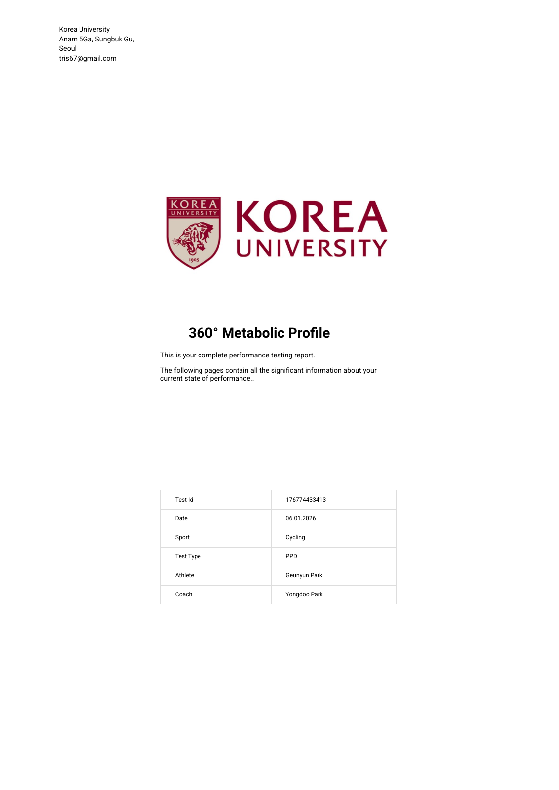
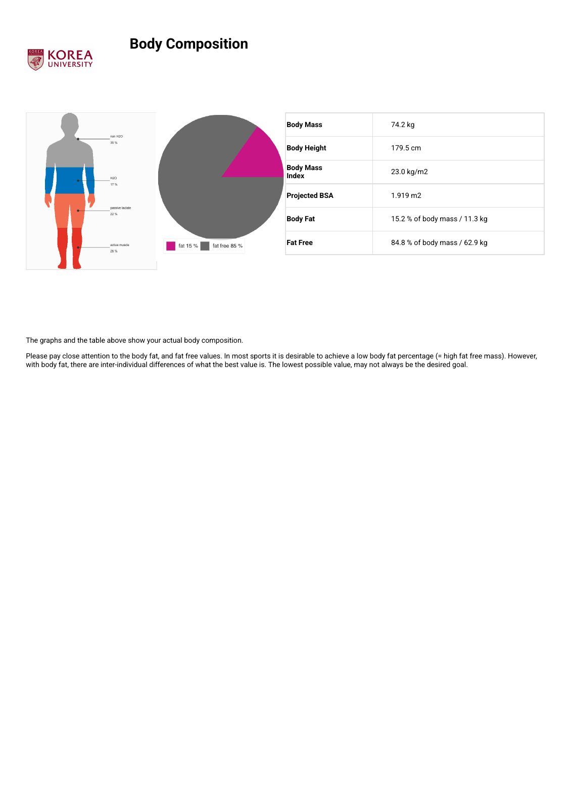

VO2max
51.7 mL/kg/min
INSCYD 리포트에 기재된 최대 유산소 능력입니다. 고강도 ceiling과 회복 여지를 읽는 기준으로 사용합니다.
INSCYD 리포트에 기재된 최대 유산소 능력입니다. 고강도 ceiling과 회복 여지를 읽는 기준으로 사용합니다.
해당 수치는 무산소 해당계 기여도를 요약합니다. 높을수록 스프린트/가속 쪽 강점이 있지만 장시간 경제성은 별도로 봐야 합니다.
리포트가 제시한 지방산화 효율 중심 강도입니다. 장시간 지구력 세션 anchor로 가장 먼저 참고할 수 있습니다.
INSCYD가 제시한 threshold anchor입니다. 실전 FTP나 훈련 중 지속 가능 강도와 반드시 같이 해석해야 합니다.
여러 에너지 시스템이 함께 보이며 우선순위를 두고 다듬을 여지가 있습니다.
균형 개발형 기준으로 보면, 지금 프로파일은 한쪽만 과하게 밀기보다 endurance와 threshold를 함께 정리하는 올라운드 블록이 어울립니다. uploaded FIT 비교 근거도 있어 추천 신뢰도는 비교적 괜찮습니다.
FatMax anchor를 더 안정적으로 쓰기 위해 zone 2 전후의 지방 대사 기반을 키우는 편이 좋습니다.
AT 근처 지속 능력은 실전 페이스와 직접 연결되므로 주간 기준 anchor로 유지할 가치가 큽니다.
VLamax가 이미 분명해 짧은 강점은 살리되, 전체 블록의 대부분을 여기에 쓰는 것은 비효율적일 수 있습니다.
3-8분 구간 FIT가 reported보다 낮으면 이번 업로드만으로는 long effort 재현도가 충분하지 않을 수 있습니다.
지금 리포트의 training direction을 실제 훈련 블록으로 옮길 때 참고할 수 있는 간단한 microcycle 예시입니다.
150.0W 전후로 2-3시간 long endurance
220.0W - 230.0W 범위 2 x 16-20min
아주 가볍게 45-60분 또는 완전 휴식
8-12초 all-out sprint 4-6회, 완전 회복
| Zone | Name | Power | Fat % | CHO % |
|---|---|---|---|---|
| 1 | recovery | 97.0W - 137.0W | 67.0% | 33.0% |
| 2 | base | 137.0W - 178.0W | 52.0% | 48.0% |
| 3 | medio | 166.0W - 214.0W | 36.0% | 64.0% |
| 4 | FATmax | 135.0W - 165.0W | 57.0% | 43.0% |
| 5 | anaerobic threshold | 214.0W - 246.0W | 0.0% | 100.0% |
| 6 | aerobic maximum | 308.0W - 338.0W | - | - |
| 7 | high anaerobic | 304.0W - 349.0W | - | - |
| 8 | lactate shuttling | 150.0W - 257.0W | - | - |
업로드된 FIT 근거는 비교적 충분합니다.
| Type | Duration | PDF Avg | FIT Best | Delta |
|---|---|---|---|---|
| Power Duration | 2m 59s | 353.0W | 248.0W | -105.0W |
| Power Duration | 7m 58s | 306.0W | 149.2W | -156.8W |
| VO2 Max | 2m 59s | 353.0W | 248.0W | -105.0W |
| VO2 Max | 7m 58s | 306.0W | 149.2W | -156.8W |
| Power Duration | 16s | 765.0W | 327.1W | -437.9W |
| Power Duration | 15s | 746.0W | 326.8W | -419.2W |
Power Performance Decoder - V3
source: Power_Performance_Decoder___V3.zwo
stages: 16 · duration: -


FatMax는 usable하지만 threshold 대비 간격이 커서 base economy를 더 다듬을 여지가 있습니다.